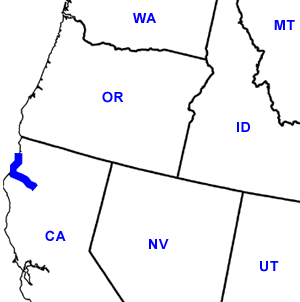

Day Twenty-Six
Douglas City, CA - Crescent City, CA
Date: 07/06/2002
Distance: 200 miles
Weather: Mostly sunny. 70's and 80's.
Slept reasonably late. Got back on scenic (aka twisty and turny) 299 west. At the end we were treated to the lovely town of Arcata, CA. We arrived at just the right time- there was a huge Farmer's Market in the main green. People were everywhere. We walked around looking at the vegetables, plants, honey, people, jugglers, and shops.
Taking advantage of the cool coastal temperatures, we left Ogden in the car and walked up the street to Wildberries Marketplace for lunch. We grabbed some fresh suchi and ravioli and decided to go eat it picnic style somewhere near the coast which was visible on our walk back to the car. We headed that way, but ended up in a wildlife research marsh area which had a walking path. It also had a nice place to sit, so we ate lunch there.
Before we left town we searched out some Internet access. Humboldt University was deserted. One more drive through town we caught an Internet cafe and game place. More like a guy's living room. It was run by a nice Linux geek who let us plop on the couch with the laptop. In the end it was a two dollar fee. (We made it a five dollar donation.)
We headed north on 101 and started to enter Redwood territory. We stopped at Redwood National Park's visitor center which was located on the beach. Twenty-six days later we had made it to the other coast. Here we discover that Jared is able to hear ultra-sonic noise. He had to run for safety from an inaudible bug zapper. If you are ever at this visitor center please wear protective ear gear.
Just up the road from the visitor center, we stopped at the Lady Bird Johnson Grove which had a nice 1 mile walk through a redwood forest. The trees were awesome. They were so tall, and so big around. We spent the whole time looking up, it's suprising we didn't trip over everything! The air in the forrest was moist and cool. It felt like a rainforrest.
Heading North on the coast road we decided to camp out in the Redwood National Forrest. We got a nice site, and the whole campground is full of redwood trunks and trees. We stopped in Crescent City for a truly awful pizza pie, then back to camp.
Here it is both important to note that gasoline is very pricey up here, and that before bed Corin won another game of rummey. Tomorrow- Oregon!